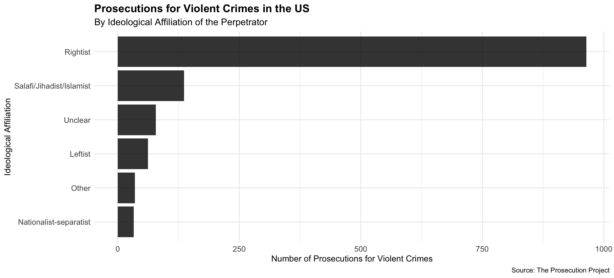

Code
suppressPackageStartupMessages({
library(tidyverse)
library(janitor)
library(RColorBrewer)
})This analysis uses data from The Prosecution Project Dataset (Loadenthal et al. 2023) to examine the number of prosecutions for violent crimes across ideological affiliations. The dataset includes information on various criminal methods, ideological affiliations, and prosecution details.
suppressPackageStartupMessages({
library(tidyverse)
library(janitor)
library(RColorBrewer)
})Import the data and clean the column names.
df <- read_csv("data/tpp-2025-09-15-general.csv") |>
clean_names()How many cases are not linked or motivated politically?
df |>
filter(criminal_method == "Criminal violation not linked or motivated politically") |>
nrow()[1] 337# remove cases not politically motivated or unknown
df <- df |>
filter(!criminal_method %in% c("Unknown/unspecified/undeveloped", "Criminal violation not linked or motivated politically"))
# classify methods as violent or non-violent
violent <- c(
"Unarmed assault",
"Hostage-taking",
"Armed intimidation/standoff",
"Vehicle ramming",
"Chemical or biological weapon deployment",
"Firearms: civilian",
"Firearms: military",
"Explosives",
"Other weapons"
)
df <- df |>
mutate(method_type = if_else(
criminal_method %in% violent,
"violent",
"non-violent"
))
# parse dates
df <- df |>
mutate(
date = str_trim(date),
date = lubridate::mdy(date)
)df |> count(ideological_affiliation)# A tibble: 13 × 2
ideological_affiliation n
<chr> <int>
1 Leftist: eco-animal focused 217
2 Leftist: government-focused 506
3 Leftist: identity-focused 59
4 Leftist: unspecified 20
5 Nationalist-separatist 114
6 No affiliation/not a factor 163
7 Other 60
8 Rightist: abortion-focused 130
9 Rightist: government-focused 583
10 Rightist: identity-focused 1788
11 Rightist: unspecified 103
12 Salafi/Jihadist/Islamist 956
13 Unclear 221df <- df |>
mutate(
ideology_simple = case_when(
str_detect(ideological_affiliation, "Leftist") ~ "Leftist",
str_detect(ideological_affiliation, "Rightist") ~ "Rightist",
TRUE ~ ideological_affiliation
)
)
df |> count(ideology_simple, sort = TRUE)# A tibble: 7 × 2
ideology_simple n
<chr> <int>
1 Rightist 2604
2 Salafi/Jihadist/Islamist 956
3 Leftist 802
4 Unclear 221
5 No affiliation/not a factor 163
6 Nationalist-separatist 114
7 Other 60Then let’s filter for only those to make our visualizations
df |>
group_by(ideology_simple, method_type) |>
summarise(n = n()) |>
pivot_wider(names_from = method_type, values_from = n, values_fill = 0) |>
select(ideology_simple, violent, `non-violent`) |>
arrange(desc(violent))# A tibble: 7 × 3
# Groups: ideology_simple [7]
ideology_simple violent `non-violent`
<chr> <int> <int>
1 Rightist 1323 1281
2 Salafi/Jihadist/Islamist 245 711
3 Leftist 145 657
4 Unclear 108 113
5 No affiliation/not a factor 63 100
6 Nationalist-separatist 52 62
7 Other 45 15violent_crimes <- df |>
filter(
method_type == "violent",
ideology_simple != "No affiliation/not a factor"
)
violent_crimes_by_ideology <- violent_crimes |>
count(ideology_simple, name = "violent_prosecutions") |>
arrange(desc(violent_prosecutions))
ggplot(violent_crimes_by_ideology, aes(x = reorder(ideology_simple, violent_prosecutions),
y = violent_prosecutions)) +
geom_col(fill = "black", alpha = 0.8) +
coord_flip() +
labs(
title = "Prosecutions for Violent Crimes",
subtitle = "Based on The Prosecution Project Dataset",
x = "Ideological Affiliation",
y = "Number of Prosecutions for Violent Crimes",
caption = "Source: The Prosecution Project, 2023"
) +
theme_minimal() +
theme(
plot.title = element_text(size = 14, face = "bold"),
plot.subtitle = element_text(size = 12),
axis.text = element_text(size = 10),
axis.title = element_text(size = 11)
)df_yearly <- violent_crimes |>
mutate(
year = lubridate::year(date),
year = as.integer(year)
) |>
filter(!is.na(year)) |>
count(year, ideology_simple, name = "prosecutions")
ggplot(df_yearly, aes(x = year, y = prosecutions, fill = ideology_simple)) +
geom_col() +
scale_fill_manual(values = c(
"Rightist" = "#c14a58ff", # Red for Rightist
"Leftist" = "#337fb5ff", # Blue for Leftist
"Salafi/Jihadist/Islamist" = "#e08738ff", # Orange
"Unclear" = "#71a771ff", # Green
"Nationalist-separatist" = "#8c564b", # Brown
"Other" = "#e377c2" # Pink
)) +
labs(
title = "Total Prosecutions of Violent Crimes by Year",
subtitle = "By Ideological Affiliation - Based on The Prosecution Project Dataset",
x = "Year",
y = "Number of Prosecutions",
fill = "Ideological Affiliation",
caption = "Source: The Prosecution Project, 2023"
) +
theme_minimal() +
theme(
plot.title = element_text(size = 14, face = "bold"),
plot.subtitle = element_text(size = 12),
axis.text = element_text(size = 10),
axis.title = element_text(size = 11),
legend.position = "bottom",
legend.title = element_text(size = 10),
legend.text = element_text(size = 9)
) +
guides(fill = guide_legend(ncol = 3)) +
scale_x_continuous(breaks = scales::pretty_breaks(n = 8))
df_deaths <- violent_crimes |>
group_by(ideology_simple) |>
summarise(total_deaths = sum(number_killed, na.rm = TRUE)) |>
arrange(desc(total_deaths))
plot1 <- ggplot(df_deaths, aes(x = reorder(ideology_simple, total_deaths),
y = total_deaths)) +
geom_col(fill = "black", alpha = 0.8) +
coord_flip() +
labs(
title = "Total Deaths from Violent Crimes",
subtitle = "Based on The Prosecution Project Dataset",
x = "Ideological Affiliation",
y = "Total Deaths from Violent Crimes",
caption = "Source: The Prosecution Project, 2023"
) +
theme_minimal() +
theme(
plot.title = element_text(size = 14, face = "bold"),
plot.subtitle = element_text(size = 12),
axis.text = element_text(size = 10),
axis.title = element_text(size = 11)
)
# exclude salafi/jihadist/islamist
plot2 <- violent_crimes |>
filter(ideology_simple != "Salafi/Jihadist/Islamist") |>
group_by(ideology_simple) |>
summarise(total_deaths = sum(number_killed, na.rm = TRUE)) |>
arrange(desc(total_deaths)) |>
ungroup() |>
ggplot(aes(x = reorder(ideology_simple, total_deaths), y = total_deaths)) +
geom_col(fill = "black", alpha = 0.8) +
coord_flip() +
labs(
title = "Total Deaths from Violent Crimes",
subtitle = "Excluding Salafi/Jihadist/Islamist",
x = "Ideological Affiliation",
y = "Total Deaths from Violent Crimes",
caption = "Source: The Prosecution Project, 2023"
) +
theme_minimal() +
theme(
plot.title = element_text(size = 14, face = "bold"),
plot.subtitle = element_text(size = 12),
axis.text = element_text(size = 10),
axis.title = element_text(size = 11)
)
plot1
plot2Loadenthal, Michael, Lauren Donahoe, Madison Weaver, Sara Godfrey, Kathryn Blowers, et. al. “The Prosecution Project Dataset,” the Prosecution Project, 2023 [dataset]. https://theprosecutionproject.org/
This descriptive analysis was created by Jeremy Allen using R, tidyverse, janitor, and RColorBrewer packages. The report is built with Quarto. The code is available on GitHub